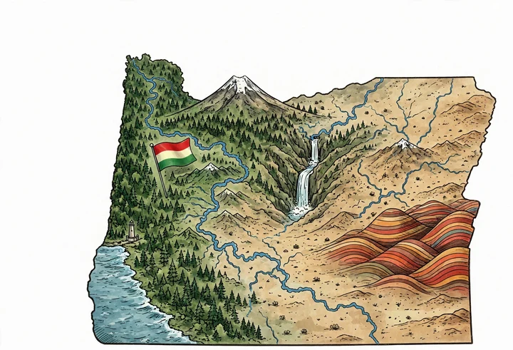
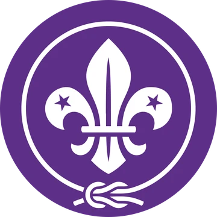
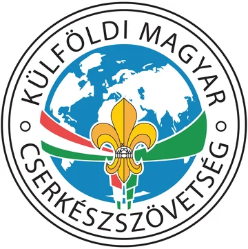

Üdvözlünk!
Oregonban működő magyar cserkészcsapat vagyunk (KMCSSZ). Foglalkozásainkon magyar nyelven, játékkal, énekkel és hagyományőrzéssel töltjük az időt.
Mi a cserkészet?

A cserkészet a világ legnagyobb ifjúsági mozgalma: 1907-ben, Angliában alapította Robert Baden-Powell, ma több mint 50 millió tagja van világszerte. A cserkészek kis közösségekben, őrsökben tanulják meg a természetjárást, a táborozást, az önállóságot és az egymás iránti felelősséget — mindezt játékos formában, a „learning by doing”, vagyis a cselekedve tanulás elve alapján. A cserkészet célja jellemes, talpraesett, másokért élő fiatalok nevelése.
A KMCSSZ

Csapatunk a Külföldi Magyar Cserkészszövetség (KMCSSZ) tagja. A szövetséget 1945-ben, Németországban alapították a hazájukból menekült magyar cserkészek, hogy a diaszpórában élő magyar fiatalok megőrizhessék nyelvüket, kultúrájukat és cserkészhagyományaikat. Ma a KMCSSZ csapatai Észak- és Dél-Amerikában, Európában és Ausztráliában működnek, és a szövetség a Cserkészmozgalom Világszervezetének (WOSM) is tagja.
Csapatunk
A 44. sz. Zrínyi Miklós Cserkészcsapat Oregonban, a Portland környéki magyar közösség cserkészcsapata. Kéthetente találkozunk: vasárnap délutánonként és a köztes heteken csütörtök esténként Hillsboro környékén. Foglalkozásainkon korosztályos őrsökben dolgozunk: játékok, ének, néptánc, kézműves foglalkozások és cserkészismeretek — csomózás, tűzrakás, térképészet, elsősegély — töltik ki az időt. Évente több tábort is szervezünk, téli, tavaszi, nyári és őszi táboraink képei a Táborok/Események oldalon láthatók.
Legfontosabb értékeink közé tartozik a magyar nyelv és kultúra ápolása: nálunk a gyerekek magyarul játszanak, énekelnek és tanulnak, így a nyelv a mindennapok részévé válik. Ugyanilyen fontos a közösség és az összetartozás — a cserkészek egymásra figyelnek, segítenek egymásnak, és megtanulják, hogy a közösségért vállalt szolgálat öröm. Hisszük, hogy a természetben, tábortűz mellett, barátok között szerzett élmények egész életre szóló tartást adnak.